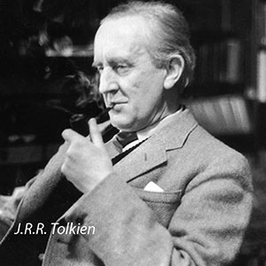

J.R.R. Tolkien, in full John Ronald Reuel Tolkien, (born January 3, 1892, Bloemfontein, South Africa—died September 2, 1973, Bournemouth, Hampshire, England), english writer and scholar who achieved fame with his children’s book The Hobbit (1937) and his richly inventive epic fantasy The Lord of the Rings (1954–55).
At age four Tolkien, with his mother and younger brother, settled near Birmingham, England, after his father, a bank manager, died in South Africa. In 1900 his mother converted to Roman Catholicism, a faith her elder son also practiced devoutly. On her death in 1904, her boys became wards of a Catholic priest. Four years later Tolkien fell in love with another orphan, Edith Bratt, who would inspire his fictional character Lúthien Tinúviel.
His guardian, however, disapproved, and not until his 21st birthday could Tolkien ask Edith to marry him. In the meantime, he attended King Edward’s School in Birmingham and Exeter College, Oxford (B.A., 1915; M.A., 1919). During World War I he saw action in the Somme. After the Armistice he was briefly on the staff of The Oxford English Dictionary (then called The New English Dictionary).
For most of his adult life, he taught English language and literature, specializing in Old and Middle English , at the Universities of Leeds (1920–25) and Oxford (1925–59). Often busy with academic duties and also acting as an examiner for other universities, he produced few but influential scholarly publications, notably a standard edition of Sir Gawain and the Green Knight (1925; with E.V. Gordon) and a landmark lecture on Beowulf (Beowulf: The Monsters and the Critics, 1936).
Tolkien had completed a translation of Beowulf in 1926, and it was posthumously published, along with classroom lectures he had given on the subject, some of his notes, and an original short story inspired by the legend, as Beowulf: A Translation and Commentary (2014). He also published an edition of the Ancrene Wisse (1962).
In private, Tolkien amused himself by writing an elaborate series of fantasy tales, often dark and sorrowful, set in a world of his own creation. He made this “legendarium,” which eventually became The Silmarillion, partly to provide a setting in which “Elvish” languages he had invented could exist. But his tales of Arda and Middle-earth also grew from a desire to tell stories, influenced by a love of myths and legends. To entertain his four children, he devised lighter fare, lively and often humorous.